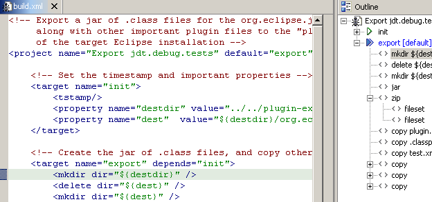

Here are some of the more interesting or significant changes made to the
Eclipse Platform for the 2.1 release of
Eclipse since 2.0:
User customizable
key bindings |
You can now customize key bindings
using Workbench > Keys preference page. Emacs users will find a
predefined set of key bindings awaiting them.

|
| Editor navigation history |
Workbench editors now keep a
navigation history. If you open a second editor while you're editing away,
you can use Navigate > Back to get back, or press the back
button on the workbench toolbar. The back button on your mouse also does
the trick as along as it sends the standard Alt + Left Arrow key sequence.

|
| Improved default text editor |
The default text editor now
supports line numbers, cursor-line highlighting, print margin, annotation
highlighting, and an overview ruler. All of these can be configured from
the Workbench > Editors > Text Editor preference page.

|
| Calmer editor linking behavior |
The resource Navigator view is no
longer tightly linked to the currently open editor by default. This means
that closing or switching editors does not change the selection in the
Navigator view, which many found disorienting. Toggle the Link with
Editor button in the Navigator view toolbar to tie the Navigator view
to always show the current file being edited.

|
| Better UI for editor / view
synchronization |
The new Navigate > Show In
action provides a uniform way to navigate from an open editor to a view
showing the corresponding file (e.g., in the resource Navigator view), or
from a file selected in one view to the same file in a different view
(e.g., from the resource Navigator view to the Java Package Explorer
view).

|
| Ant view |
There is a new Ant view (Window
> Show View > Ant) that makes it easier to run Ant build files. The
Ant view allows you to view your Ant build files in one place and simplifies
running a single Ant target. The view includes a search button for
finding Ant build files in the workspace to add to the view.

|
| Ant editor |
There is a new Ant editor that makes it easier to edit Ant build files.
The Ant editor provides content assist, syntax highlighting, an outline, and error reporting.
 |
| External tools & launch
configurations |
External tools have been completely migrated to use launch
configurations. The Run > External Tools drop-down menu now
appears and works in the same fashion as the run and debug drop-down
menus. The output from external tools now appears in the standard Console
view. External tools can now be run in the background, by a separate
thread. This means that you can let an Ant build run or launch an external
program and still continue to work in the Eclipse IDE.

|
| More flexible project layouts |
There is now improved support for
dealing with externally imposed restrictions on how the files in a
workspace project are laid out in the local file system. When creating a
folder (or file), you can link it to an existing location in the file
system outside of the workspace. This is done using the Advanced section
on the New Folder (and New File) wizards. These linked
resources are useful for integrating with external libraries or source
code directories that cannot readily be copied into an Eclipse workspace.
|